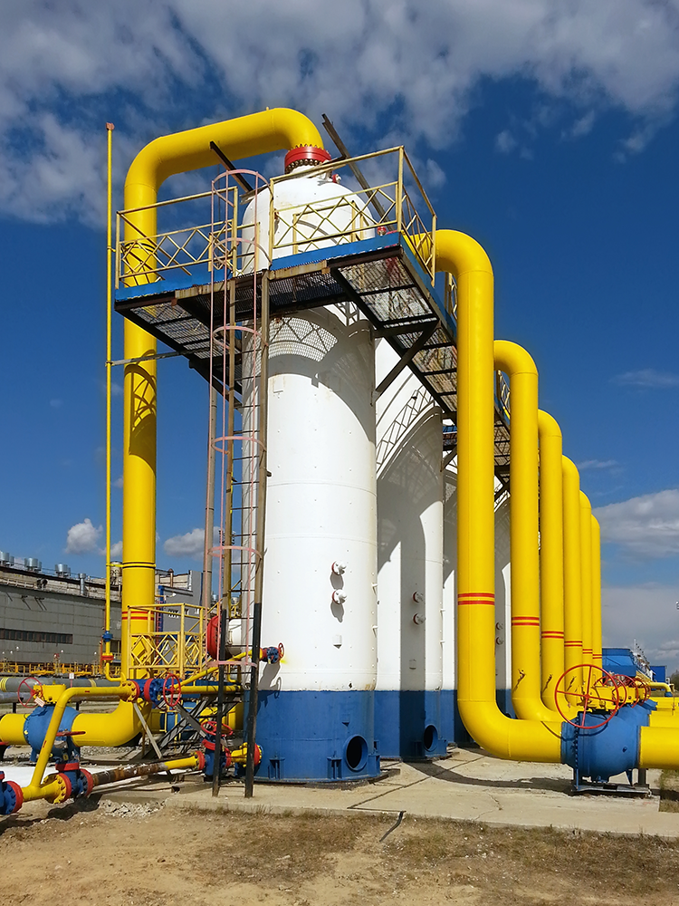
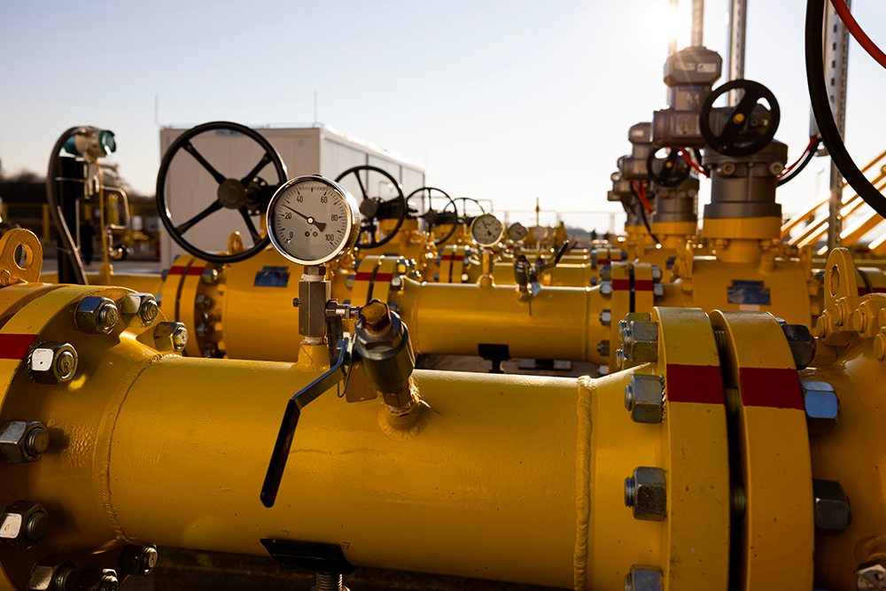

Energy, oil and gas
ELCON provides high-reliability automation systems for the energy and oil & gas sectors, focusing on Integrated Control and Safety Systems (ICSS).

What ELCON does.
ELCON provides high-reliability automation systems for the energy and oil & gas sectors, focusing on Integrated Control and Safety Systems (ICSS). We design and program redundant, fault-tolerant systems that meet the strict demands of critical infrastructure. Our approach ensures minimal production interruptions, even during reconstructions and maintenance, through rigorous multi-phase testing.
Electrical design
- 01Begins with basic design documents approved by the client
- 02Detailed electrical plans are developed and reviewed before cabinet production
- 03A sample cabinet is built and inspected before full production
- 04FAT procedures validate cabinet functionality before site deployment
- 05SAT testing on-site verifies all installations and connections
Programming
- 01Starts with basic design specifications, followed by detailed design documents
- 02Client-approved specifications guide software development
- 03FAT testing includes simulations using SIMIT digital twin technology
- 04SAT testing on-site ensures full compliance with operational and safety requirements
The pain points.
- Extensive use of motors, valves, sensors, and control loops
- High reliability demands requiring full system redundancy
- Complex testing protocols (FAT, SAT, and communication validation)
- Critical need for diagnostics and visualization of operational conditions
Our solution.
- Redundant architecture across servers, PLCs, clients, and networks
- Siemens Safety Matrix and interlock blocks for safety logic and condition visualization
- Digital twin simulations with SIMIT for validating complex functions
- Multi-phase FAT and SAT testing ensures system integrity and uptime
TurkStream


Southstream Transport B.V. manages and maintains the TurkStream pipeline, which extends beneath the Black Sea from Anapa, Russia, to the village of Kıyıköy in Turkey, continuing onward to Europe. Following the completion of a compressor station in Russia, construction began on a reception terminal in Turkey designed to heat, analyze, and reduce the pressure of incoming gas before distribution to customers throughout Turkey and Europe. The client required a highly reliable and secure system that could be monitored remotely from their headquarters in the Netherlands.
The project centered on implementing an Integrated Control and Safety System (ICSS) for the reception terminal. This system encompasses Process Control System (PCS), Safeguarding System (SGS), and Fire and Gas System (FGS). ELCON was tasked with electrical design for PCS, SGS, and telecommunications, which included IT infrastructure, telephony, security, and Public Address General Alarm (PAGA) systems. Additionally, comprehensive documentation, programming for PCS and SGS, SCADA development, and full integration, including the control room, its backup, the compressor station, and the reception terminal, were delivered.
Using Siemens PCS 7 software and an Oil & Gas-specific Siemens library, the PCS and SGS programs were developed. To meet demanding reliability requirements, Siemens S7-400H redundant controllers were deployed. The SCADA system was developed on the WinCC Open Architecture platform, with IEC-104 protocol ensuring seamless communication between SCADA and controllers. Integration of various processing units within the reception terminal was also managed, coordinating with multiple global suppliers to ensure flawless interoperability.
Factory Acceptance Testing (FAT) was conducted using Siemens SIMIT simulation, allowing for early detection of issues and operator training. Site Acceptance Testing (SAT) followed, and ELCON provided on-site assistance during commissioning. The result is a state-of-the-art reception terminal with highly reliable, secure, and scalable control systems. The infrastructure supports minimized downtime, readily available spare parts, and is prepared for future expansion of gas distribution capacity, ensuring smooth and safe operations for years to come.
References.
| Customer | Year | Project | Goods and services |
|---|---|---|---|
| Energetika Ljubljana, Unit: Te-Tol, Slovenia | 2021 | Automation of air compressor station in powerplant TE-TOL | Electrical Detail Design and Software |
| Energetika Ljubljana, Unit: Te-Tol, Slovenia | 2020 | Automation of process of supervision and control of level of sealing steam from turbine 3 in KTP3 | Electrical Detail Design and Software |
| Energetika Ljubljana, Unit: Te-Tol, Slovenia | 2019 | Automation of central cooling system of the thermal powerplant | Electrical Detail Design and Software |
| South Stream / Petrofac / Comita | 2018, 2019, 2020 | Automation of receiving station for project Turkstream in Kiyikoy Turkey | Electrical basic and detail design, Software for process and safety part, Modification of telecommunication cabinets |
| Energy Plant Sicet Ltd. Ospitale Die Cadore, Italy | 2011-2022 | Automation of power plant. Fuel: wood chips | Software and optimization |
Book a free call.
Let’s discuss how ELCON can enhance your energy infrastructure. Book a free strategy session with our team.